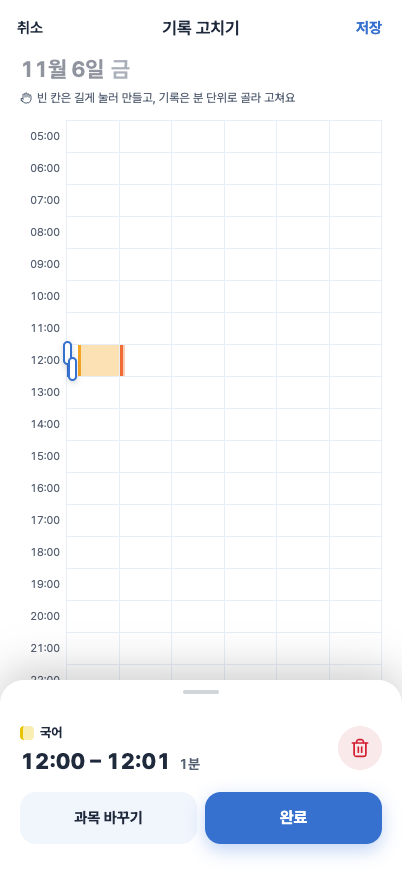
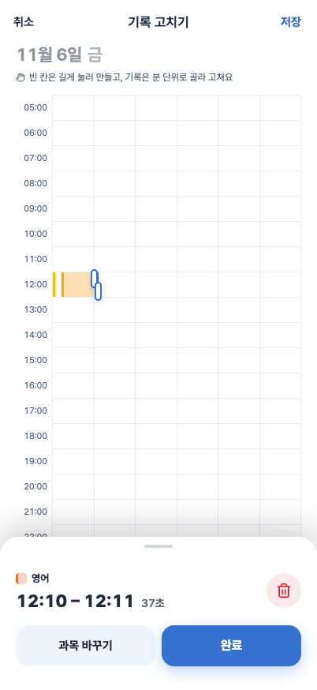
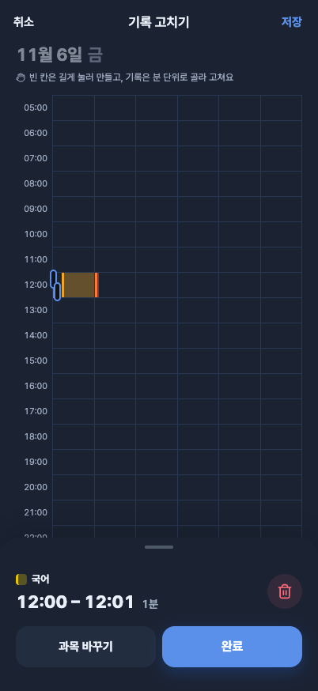
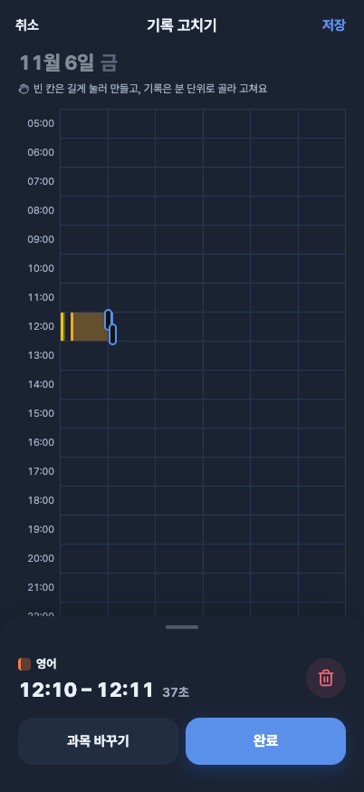
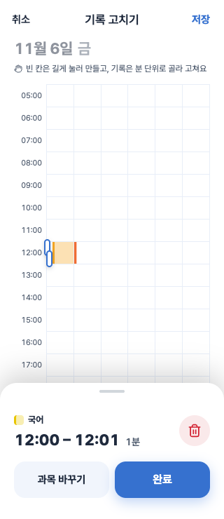
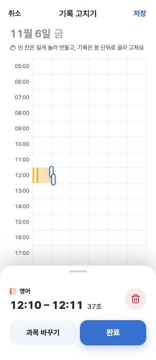
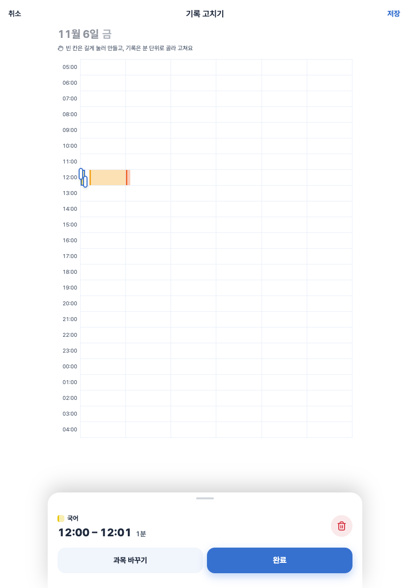
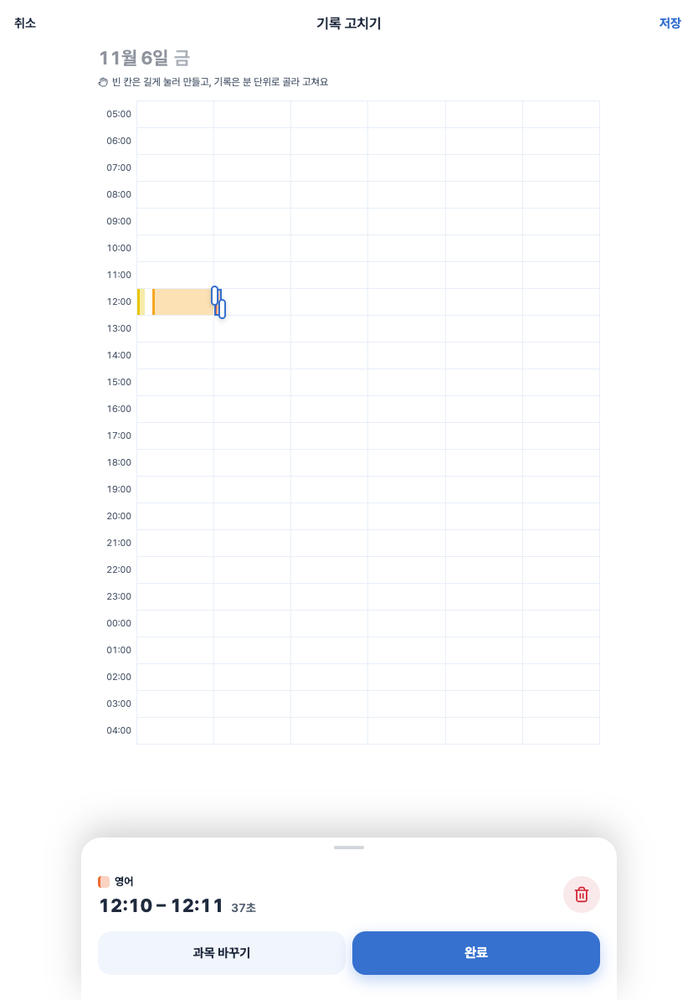

FocusMakers · BY-1205 · 2026-11-09
분 단위 대표 과목과 기록 편집
한 분 안의 과목별 실제 길이를 합산해 대표 과목 하나를 표시합니다. 동률이면 마지막에 끝난
과목을 고릅니다. 수정·삭제는 선택한 부모 기록의 분 범위 안에 있는 모든 실제 조각에 적용합니다.
로컬 자동·화면 검증 통과 Figma 라이트·다크 시안
· FE 티켓
검증한 항목
| 범위 |
결과 |
| 플래너 분 편집·기존 보호 동작 |
23개 파일 / 163개 테스트 통과 |
| 전체 저장소 테스트 |
pnpm test 5개 작업 통과 · web 7,312개 통과 / 기존 1개 건너뜀 |
| 타입·린트·프로덕션 빌드 |
전체 타입·린트 통과, 웹 빌드 통과 · QA 앱과 별도 출력 경로 사용 |
| 독립 코드 리뷰 |
94/100 · 남은 필수 수정 없음 |
| 실제 브라우저, 합성 데이터 |
320·402·834px, 라이트·다크, 대표 과목·37초 표시 · 콘솔 오류0 |
| 터치·레이아웃 |
삭제 버튼44×44px, 오른쪽 잘림 없음, 가로 넘침 없음, reduced-motion 적용 |
빈 시간과 과목 없음의 구분, 나노초 비교, revision0, 부모별 작업 하나, 삭제 빈칸 보존, 응답
유실 동일 본문 재시도, stale 재조회, 계정 변경, 날짜 이동과 새 기록 드래그를 검증했습니다.
저장 흐름
실제 pieces분별 대표 과목부모 키 + 선택 분 범위EDIT_RANGES + revision
37초 기록을 60초로 늘리지 않습니다. 공부·순공 합계는 서버 값을 유지합니다. 다른 곳에서 바뀐
기록은 다시 불러오고, 예전 변경을 자동으로 다시 저장하지 않습니다.
아직 검증하지 않은 항목
- BY-1204 배포 서버에서 실제 범위 저장·삭제 후 재조회
- 실제 동시 수정과 서버 원자성·개인 통계 반영
- iPhone·Android 실기기에서 새 분 편집의 저장 왕복
- VoiceOver와 카메라 앞5분 순공 실측: 사용자 요청대로 보류
실제 사용자 기록을 수정·삭제하지 않았습니다. 사용 중인 앱·세션·QA 배포 파일은 유지했습니다.
아래 캡처는 합성 데이터의 브라우저 화면입니다.
화면별 캡처

402px 라이트 · 20초씩 세 과목의 대표 국어

402px 라이트 · 실제 길이 37초

402px 다크 · 대표 국어

402px 다크 · 실제 길이 37초

320px · 분 선택과 삭제 버튼

320px · 실제 길이 37초

834px 패드 · 가운데 최대 너비 유지

834px 패드 · 실제 길이 37초
검증 수치: 화면별 측정 JSON · 소스 브랜치
feature/BY-1205-planner-minute-ranges